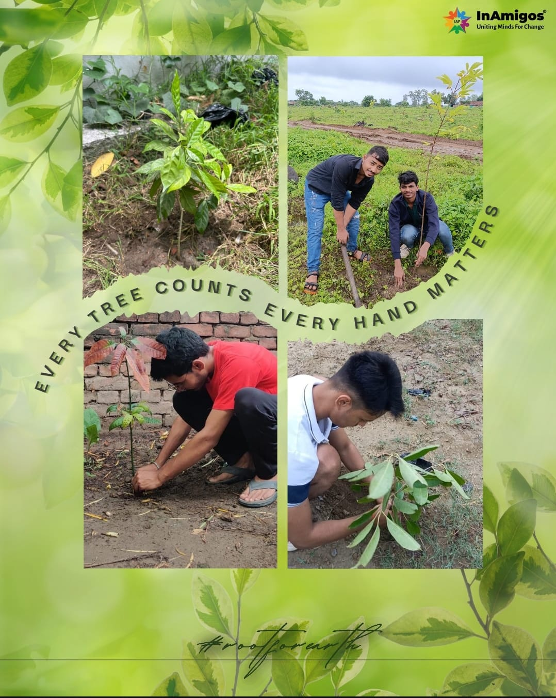

Major Activities & Campaigns

January 2026
Food & Donation Drive
Volunteers distributed food packets, clothes, and essentials to underprivileged communities to support families in need.

February 2026
Environment Awareness Campaign
Awareness activities and tree plantation drives were conducted to encourage sustainability and environmental responsibility.

March 2026
Education Support Initiative
Learning support sessions and awareness programs were organized to encourage education among children and youth.

April 2026
Volunteer Community Meet
Volunteers collaborated to discuss future social initiatives, awareness activities, and teamwork for impactful campaigns.